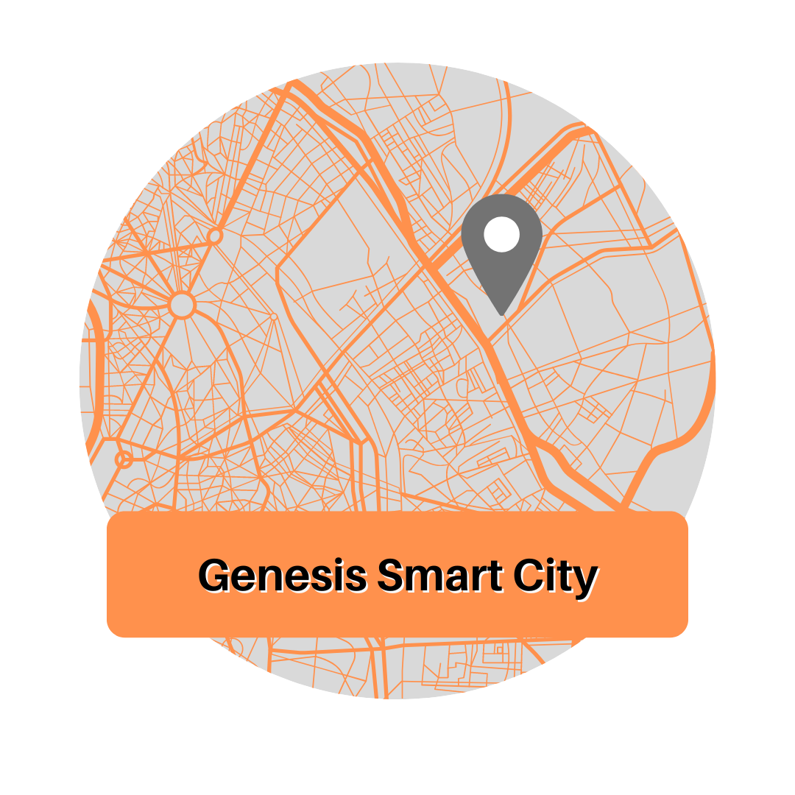

Genesis Smart City
Tipo de Ocorrência:
Foco de Mosquitos da Dengue
Foco de COVID-19
Esgoto a Céu Aberto
Via sem Pavimento
Falta de Iluminação Pública
Veículo Abandonado em Via Pública
Entulho/Lixo em Geral
Buraco na Via
Reportar Ocorrência
Centralizar Mapa
Minha localização
Tela Inteira
Ocorrências